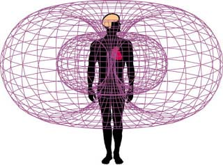
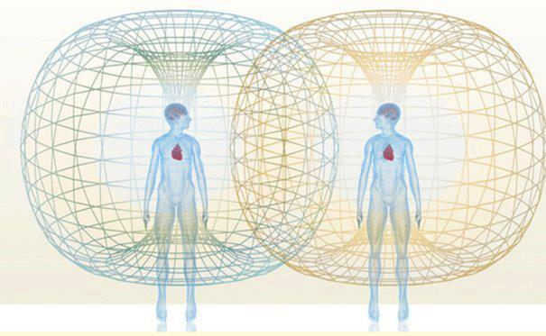

The Secret Movie Analysis
Wisdom-Square › Spirituality and Health › The Secret Movie AnalysisIf you’ve never seen the movie called “The Secret” I would recommend you to first before reading this. It provides a very basic understanding of an ancient secret wisdom that says you can manifest events in your life through the virtue of your own thoughts, otherwise known as the Law of Attraction. But is there any proof of any of this?
Could there be a lost science that allows us to transcend the visions of war, disease, and the greatest tragedies ever to face humankind? Is it possible that somewhere in the mists of our ancient memory an event occurred that has left a gap in our understanding of how we relate to our world and one another? 2,500 year old texts, as well as modern science, suggest that the answer to these and similar questions is a resounding:
“YES!”
It can also be more appropriately called the secret science of pray, which appears to have been shared openly by societies and traditions of our past. However, the last bit of this empowering wisdom was lost to western traditions with the disappearance of rare texts referencing them in the fourth century. But through the eyes of modern science, recent translations of texts such as the Dead Sea Scrolls, the Nag Hammadi Library and Gnostic manuscripts discovered in Egypt have shed new light on what used to be considered as only ancient folklore and fairy tales. The visions of the Old Testament prophet Isaiah, for example, was recorded over 500 years before the time of Christ and is one of the first written accounts of this secret. It also happens to be the only manuscript discovered completely intact among the Dead Sea Scrolls in 1946. Today it is displayed in Jerusalem at the Shrine of the Book Museum. People like Gregg Braden have spent a lot of time decoding the text, and has even named this secret the Isaiah Effect.
But why is it that this may not seem true for you? Well the reality is that the movie kind of glossed over some important details, so let's take a closer look:
1. Subconscious mind vs. conscious mind
2. Participatory reality vs. individual reality
3. Feel as if it already happened
4. Pray from the heart, not the mind
 |
Subconscious mind vs. conscious mind:
The truth is that our mind manifests based on repetition. If we wish to manifest our reality, then we must first believe that it could happen... and the only way to do that is through our subconscious mind. Sigmund Freud once said that the conscious mind was only 10% as powerful as our subconscious mind, and although most people think it's impossible to control our subconscious mind, there actually exits a number of methods. The core problem is that most of us have ingrained limiting beliefs like, "I can't do that" or "That would never happen to me." This stops us from "believing" that we could live any differently than what we have become accustomed to. But certain people like Bob Proctor, which appears in the movie, has dedicated their lives to figuring this out. One technique is to use affirmations, which simply requires one to repeat a phrase over and over again in the mind or aloud. This will help to subliminally get rid of any limiting belief by programming your mind to think otherwise. No different from the way T.V. is able to program your subcouncious mind, but instead this time your in complete control. Also, the movie suggests to create a visual board of the things you want in your life, and look at it everyday.
A problem with this that wasn't mentioned in the movie is that most people have this limiting beliefs about ourselves without even realizing it. The easy way to tell if you have one of these beliefs or not is to say a phrase outlous that you're not sure about, and see how it feels. If it even feels the slightest bit true to you or hard for you to say, then it's very likely you have that belief.
People like Morty Lefkoe have came up with systems to rid people of this, and remind us that we are truly the creators of our reality instead of victims of it. The objective is to learn where the belief originally came from. By understanding that the first time you started to think a certain way was due to your "interpretation" of certain meaningless events, you are able to free yourself from that believe and will then have the power to "choose" another interpretation, thereby changing your beliefs about yourself.
By fixing our subconscious, we can have very clear and specific intent about what we want and actually be able to believe it can happen.
"Until you make the unconscious conscious, it will direct your lief and you will call it fate." - Carl Jung
Participatory reality vs. individual reality:
When we become more and more aware that this is possible, we will draw our manifestations faster and more accurate. The synchronicities increase in our lives will increase in correspondence to where we place our intent on. However, the manifestation is always going to be a little different than what we originally imagined. That's because what you feed to the field is also affected by what everyone else is feeding. This is the feedback loop, where the field shapes you and you shape the field. In other words: you create your reality, and your reality creates you.
Everyone equally affects the field, and we share this joint reality since there is only one reality.
However, by sharing a common intent, many individuals may amplify the effect and accelerate the manifestation. This is better known as global meditation or the Mashahiri Effect.
The Institute of Noetic Sciences (home of Princeton University) begun in 1998 the international Global Consciousness Project that proved when enough people got together to focus their intent, human consciousness as a whole would become "coherent" and synchronize to that intent.
On Friday November 13, 1998, a mass pray was implemented, on a worldwide basis, as a choice of peace during a time of escalating political tension in many parts of the world. Specifically that day was the last day for Iraq to comply with the United Nations’’ demands for weapons inspections. Before this day, months had pasted of unsuccessful negotiations for access into sensitive sites, the nations of the West had made it clear that Iraq’s failure to comply would result in a massive and extended bombing campaign designed to damage suspected weapons sites. Such a maneuver would certainly result in the loss of many lives, civilians as well as military. But instead, within the same half hour window of several hundred thousand people praying for peace, the president of the United States called off the aerial attack over Baghdad. He did this because he received a letter from Iraqi officials stating that they would now cooperate with the requested weapons inspections. The chances of such an event happening by coincident during the same time-window as the global prayer are extremely small.
Leading researchers of this have even got it down to a simple math equation to determine how many people it would take to collectively meditate compared to how many people they would be able to have influence over. If you wanted to affect your specific town, state or country, just take the square root of one percent of the population. So if the world currently is said to have 7.063 billion (according to the United States Census Bureau as of March 12, 2012) then it would only take 8,404 people to get together to meditate for world peace to be able to successfully change the world.
 |
Feel as if it already happened:
When most people pray, they ask for something to happen. The problem with this is how long does it take? The truth is that nothing will manifest unless you pray, act, feel, etc. as if it already has happened. Instead of saying "Please let me have strength" try saying "Thank you for my strength." Visualize what it would be like if it already happened, how would you feel... this is exactly what it takes to influence manifestation.
|
 |
 |
Pray from the heart, not the mind:
The Institute of HeartMath determined that the heart radiates an electromagnetic field affecting each others’ moods, attitudes, and feelings – whether we are conscious of it or not. In fact, our heart has the most powerful electromagnetic field in our entire body that projects out 8 feet around us. Surprisingly, this electromagnetic field is 50,000 times more powerful than the one our brain has.
This may be the best known part of the whole secret, see when we create from solely our minds things manifest only in ways that we may later perceive as being logical and also with polarity. Our brains are polarized, left/right, masculine/feminine, logical/creative, white/black, etc. If we prayed for world peace with our mind, we would get it, but along with world war. That is the way in which our brain manifests, with opposites. But, if we prayed from our hearts, which knows unity and oneness, we could get world peace without world war and it wouldn’t have to come about in a logical way. It would have the potential to manifest itself in any creative way.
Ancient texts say that pray is not done through words, the words don't matter. The intent is what matters. You must first imagine/visualize what you want in your mind, then feel what it would be like to already have it in your stomach area. And finally it's when you combine these two things in your heart, you will gain the emotion of what it's like to have this come true... and by only doing this will the manifestation come to be a reality.
Not sure if this is true or not yet? Doctors in China used this method to rid a person of her cancer. United States doctors told her she was going to die, because they couldn't do anything more with our current technology. But this is the imagine of what was able to happen, to the left is the before image of the tumor and to the right is an image taken:
There is a large amount of other stories as well that all prove the same thing of mind over matter. To better understand how this actually works, you must first understand what this universe is comprised of. Einstein figured out that everything is composed of vibrating frequencies, called energy, according to his theory of relativity that explained E=mc2. In other words, even your body, thoughts, feelings, and emotions are as well vibrating frequencies. Although you can’t see your thoughts, feelings, and emotions, we know they create a vibration because if you were to be attached to an electro-magnetic (EM) machine, your vibrations can be graphed while you think and feel different things. They simple vibrate at a speed that doesn’t allow us to see, just like how gamma waves and radio waves vibrate at a speed we can’t see, but still hold information within them. On top of that, positive emotions are clearly shown as being more powerful than negative emotions, so through science it’s proven that you have a better chance of affecting the reality around you with positive thoughts.
What we imagine and feel to be true is what will be our lives.
“A wise man, recognizing that the world is but an illusion, does not act as if it is real, so (therefore) he escapes the suffering”
-Buddha.